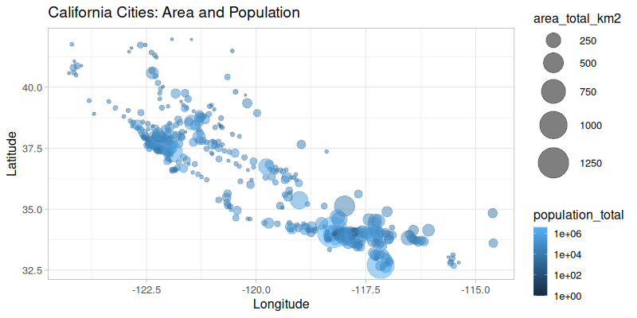
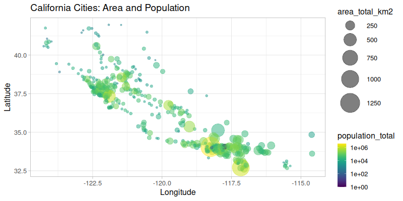
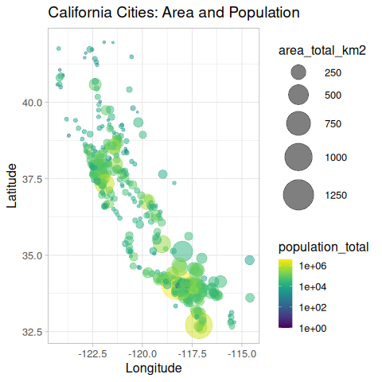

Using rpy2 in notebooks¶
rpy2 is designed to play well with notebooks. While the target notebook is jupyter, it is used in other notebook systems (some of them are based on Jupyter, or are managed Jupyter notebook systems).
rpy2 is working, and is sometimes available by default, with Google’s Colab, Databricks notebooks, AWS SageMaker, Azure Notebooks, or Google Cloud AI Platform Notebooks.
This section shows how rpy2 can be used to add everything R can offer to Python notebooks.
Note
This section is available as a jupyter notebook jupyter.ipynb (HTML render: jupyter.html)
from functools import partial
from rpy2.ipython import html
html.html_rdataframe=partial(html.html_rdataframe, table_class="docutils")
/opt/hostedtoolcache/Python/3.10.17/x64/lib/python3.10/site-packages/rpy2/rinterface/__init__.py:1211: UserWarning: Environment variable "LD_LIBRARY_PATH" redefined by R and overriding existing variable. Current: "/opt/R/4.5.0/lib/R/lib:/usr/local/lib:/usr/lib/x86_64-linux-gnu:/usr/lib/jvm/temurin-17-jdk-amd64/lib/server:/opt/hostedtoolcache/Python/3.10.17/x64/lib:/opt/hostedtoolcache/Python/3.10.17/x64/lib", R: "/opt/R/4.5.0/lib/R/lib:/usr/local/lib:/usr/lib/x86_64-linux-gnu:/usr/lib/jvm/temurin-17-jdk-amd64/lib/server:/opt/R/4.5.0/lib/R/lib:/usr/local/lib:/usr/lib/x86_64-linux-gnu:/usr/lib/jvm/temurin-17-jdk-amd64/lib/server:/opt/hostedtoolcache/Python/3.10.17/x64/lib:/opt/hostedtoolcache/Python/3.10.17/x64/lib"
warnings.warn(
/opt/hostedtoolcache/Python/3.10.17/x64/lib/python3.10/site-packages/rpy2/rinterface/__init__.py:1211: UserWarning: Environment variable "PWD" redefined by R and overriding existing variable. Current: "/home/runner/work/rpy2/rpy2/doc", R: "/home/runner/work/rpy2/rpy2/doc/notebooks"
warnings.warn(
/opt/hostedtoolcache/Python/3.10.17/x64/lib/python3.10/site-packages/rpy2/rinterface/__init__.py:1211: UserWarning: Environment variable "LD_LIBRARY_PATH" redefined by R and overriding existing variable. Current: "/opt/R/4.5.0/lib/R/lib:/usr/local/lib:/usr/lib/x86_64-linux-gnu:/usr/lib/jvm/temurin-17-jdk-amd64/lib/server:/opt/R/4.5.0/lib/R/lib:/usr/local/lib:/usr/lib/x86_64-linux-gnu:/usr/lib/jvm/temurin-17-jdk-amd64/lib/server:/opt/hostedtoolcache/Python/3.10.17/x64/lib:/opt/hostedtoolcache/Python/3.10.17/x64/lib", R: "/opt/R/4.5.0/lib/R/lib:/usr/local/lib:/usr/lib/x86_64-linux-gnu:/usr/lib/jvm/temurin-17-jdk-amd64/lib/server:/opt/R/4.5.0/lib/R/lib:/usr/local/lib:/usr/lib/x86_64-linux-gnu:/usr/lib/jvm/temurin-17-jdk-amd64/lib/server:/opt/R/4.5.0/lib/R/lib:/usr/local/lib:/usr/lib/x86_64-linux-gnu:/usr/lib/jvm/temurin-17-jdk-amd64/lib/server:/opt/hostedtoolcache/Python/3.10.17/x64/lib:/opt/hostedtoolcache/Python/3.10.17/x64/lib"
warnings.warn(
/opt/hostedtoolcache/Python/3.10.17/x64/lib/python3.10/site-packages/rpy2/rinterface/__init__.py:1211: UserWarning: Environment variable "R_SESSION_TMPDIR" redefined by R and overriding existing variable. Current: "/tmp/RtmpDEXZKB", R: "/tmp/RtmpGa9HQB"
warnings.warn(
Data Import¶
We choose to use an external dataset to demonstrate how R’s own data import features can be used.
from rpy2.robjects.packages import importr
utils = importr('utils')
dataf = utils.read_csv('https://raw.githubusercontent.com/jakevdp/PythonDataScienceHandbook/'
'master/notebooks_v1/data/california_cities.csv')
The objects returned by R’s own read.csv() function (note that the R
function in the R package utils is called read.csv() while the
Python function is called read_csv() - rpy2 converts R symbols
with dots to underscores for Python).
rpy2 provides customization to display R objects such as data frames
in HTML in a notebook. That customization is enabled as follows:
import rpy2.ipython.html
rpy2.ipython.html.init_printing()
dataf
| X | city | latd | longd | ... | area_water_km2 | area_water_percent | ||
|---|---|---|---|---|---|---|---|---|
| 0 | 1 | 0 | Adelanto | 34.57611111111112 | -117.43277777777779 | ... | 0.046 | 0.03 |
| 1 | 2 | 1 | AgouraHills | 34.15333333333333 | -118.76166666666667 | ... | 0.076 | 0.37 |
| 2 | 3 | 2 | Alameda | 37.75611111111111 | -122.27444444444444 | ... | 31.983 | 53.79 |
| 3 | 4 | 3 | Albany | 37.886944444444445 | -122.29777777777778 | ... | 9.524 | 67.28 |
| 4 | 5 | 4 | Alhambra | 34.081944444444446 | -118.135 | ... | 0.003 | 0.01 |
| 5 | 6 | 5 | AlisoViejo | 33.575 | -117.72555555555556 | ... | 0.0 | 0.0 |
| 6 | 7 | 6 | Alturas | 41.48722222222222 | -120.5425 | ... | 0.036000000000000004 | 0.57 |
| 7 | 8 | 7 | AmadorCity | 38.419444444444444 | -120.82416666666666 | ... | 0.0 | 0.0 |
| ... | ... | ... | ... | ... | ... | ... | ... | ... |
| 480 | 481 | 480 | Yucaipa | 34.030277777777776 | -117.04861111111111 | ... | 0.013000000000000001 | 0.02 |
| 481 | 482 | 481 | YuccaValley | 34.13333333333333 | -116.41666666666667 | ... | 0.0 | 0.0 |
dataf.colnames
| X | city | latd | longd | elevation_m | elevation_ft | population_total | area_total_sq_mi | ... | area_water_km2 | area_water_percent |
stats = importr('stats')
base = importr('base')
fit = stats.lm('elevation_m ~ latd + longd', data=dataf)
fit
| 0 | coefficients | (Intercep... |
| 1 | residuals | ... |
| 2 | effects | ... |
| 3 | rank | [1] 3 |
| 4 | fitted.values | ... |
| 5 | assign | [1] 0 1 2 |
| 6 | qr | $qr ... |
| 7 | df.residual | [1] 431 |
| ... | ... | ... |
| 11 | terms | elevation... |
| 12 | model | ... |
Graphics¶
R has arguably some the best static visualizations, often looking more polished than other visualization systems and this without the need to spend much effort on them.
Using ggplot2¶
Among R visulization pacakges, ggplot2 has emerged as something
Python users wished so much they had that various projects to try port
it to Python are regularly started.
However, the best way to have ggplot2 might be to use ggplot2
from Python.
import rpy2.robjects.lib.ggplot2 as gp
/opt/hostedtoolcache/Python/3.10.17/x64/lib/python3.10/site-packages/rpy2/robjects/lib/ggplot2.py:76: UserWarning: This was designed against ggplot2 versions starting with 3.5. but you have 3.5.2.
warnings.warn(
R lets is function parameters be unevaluated language objects, which is
fairly different from Python’s immediate evaluation. rpy2 has a
utility code to create such R language objects from Python strings. It
can then become very easy to mix Python and R, with R like a
domain-specific language used from Python.
from rpy2.robjects import rl
Calling ggplot2 looks pretty much like it would in R, which allows
one to use the all available documentation and examples available for
the R package. Remember that this is not a reimplementation of ggplot2
with inevitable differences and delay for having the latest changes: the
R package itself is generating the figures.
p = (gp.ggplot(dataf) +
gp.aes(x=rl('longd'),
y=rl('latd'),
color=rl('population_total'),
size=rl('area_total_km2')) +
gp.geom_point() +
gp.scale_color_continuous(trans='log10'))
Plotting the resulting R/ggplot2 object into the output cell of a notebook, is just function call away.
from rpy2.ipython.ggplot import image_png
image_png(p)
R callback write-console: In addition:
R callback write-console: Warning messages:
R callback write-console: 1:
R callback write-console: In (function (package, help, pos = 2, lib.loc = NULL, character.only = FALSE, :
R callback write-console:
R callback write-console: library ‘/home/runner/work/_temp/Library’ contains no packages
R callback write-console: 2:
R callback write-console: In (function (package, help, pos = 2, lib.loc = NULL, character.only = FALSE, :
R callback write-console:
R callback write-console: library ‘/home/runner/work/_temp/Library’ contains no packages
R callback write-console: 3:
R callback write-console: In (function (package, help, pos = 2, lib.loc = NULL, character.only = FALSE, :
R callback write-console:
R callback write-console: library ‘/home/runner/work/_temp/Library’ contains no packages
R callback write-console: 4:
R callback write-console: In (function (package, help, pos = 2, lib.loc = NULL, character.only = FALSE, :
R callback write-console:
R callback write-console: library ‘/home/runner/work/_temp/Library’ contains no packages
R callback write-console: 5:
R callback write-console: In (function (package, help, pos = 2, lib.loc = NULL, character.only = FALSE, :
R callback write-console:
R callback write-console: library ‘/home/runner/work/_temp/Library’ contains no packages
R callback write-console: 6:
R callback write-console: In (function (package, help, pos = 2, lib.loc = NULL, character.only = FALSE, :
R callback write-console:
R callback write-console: library ‘/home/runner/work/_temp/Library’ contains no packages
R callback write-console: 7:
R callback write-console: In (function (package, help, pos = 2, lib.loc = NULL, character.only = FALSE, :
R callback write-console:
R callback write-console: library ‘/home/runner/work/_temp/Library’ contains no packages
R callback write-console: 8:
R callback write-console: In (function (package, help, pos = 2, lib.loc = NULL, character.only = FALSE, :
R callback write-console:
R callback write-console: library ‘/home/runner/work/_temp/Library’ contains no packages
All features from ggplot2 should be present. A more complex example
to get the figure we want is:
from rpy2.robjects.vectors import IntVector
p = (gp.ggplot(dataf) +
gp.aes(x=rl('longd'),
y=rl('latd'),
color=rl('population_total'),
size=rl('area_total_km2')) +
gp.geom_point(alpha=0.5) +
# Axis definitions.
gp.scale_x_continuous('Longitude') +
gp.scale_y_continuous('Latitude') +
# Custom size range.
gp.scale_size(range=IntVector([1, 18])) +
# Transform for pop -> color mapping
gp.scale_color_continuous(trans='log10') +
# Title.
gp.ggtitle('California Cities: Area and Population') +
# Plot theme and text size.
gp.theme_light(base_size=16))
image_png(p)
R callback write-console: In addition: R callback write-console: Warning message: R callback write-console: Removed 5 rows containing missing values or values outside the scale range (geom_point()).
Using ggplot2 extensions¶
There existing additional R packages extending ggplot2, and while it
would be impossible for the rpy2 to provide wrapper for all of them the
wrapper for ggplot2 is based on class hierarchies that should make
the use of such extensions really easy.
For example, to use the viridis color scale, we just need to import the
corresponding R package, and write 3 lines of Python to extend
rpy2’s ggplot2 wrapper with a new color scale. A clas diagram with
the classes in the rpy2 wrapper for ggplot2 is available in the rpy2
documentation.
viridis = importr('viridis')
class ScaleColorViridis(gp.ScaleColour):
_constructor = viridis.scale_color_viridis
scale_color_viridis = ScaleColorViridis.new
That new color scale can then be used as any other scale already present
in ggplot2:
p = (gp.ggplot(dataf) +
gp.aes(x=rl('longd'),
y=rl('latd'),
color=rl('population_total'),
size=rl('area_total_km2')) +
gp.geom_point(alpha=0.5) +
gp.scale_x_continuous('Longitude') +
gp.scale_y_continuous('Latitude') +
gp.scale_size(range=IntVector([1, 18])) +
scale_color_viridis(trans='log10') +
gp.ggtitle('California Cities: Area and Population') +
gp.theme_light(base_size=16))
image_png(p)
R callback write-console: In addition: R callback write-console: Warning messages: R callback write-console: 1: Removed 5 rows containing missing values or values outside the scale range (geom_point()). R callback write-console: 2: R callback write-console: In (function (package, help, pos = 2, lib.loc = NULL, character.only = FALSE, : R callback write-console: R callback write-console: library ‘/home/runner/work/_temp/Library’ contains no packages
R “magics”¶
So far we have shown that using ggplot2 can be done from Python as
if it was just an other Python library for visualization, but R can also
be used in cells.
First the so-called “R magic” extensions should be loaded.
%load_ext rpy2.ipython
From now on, code cells starting with %%R will see their content
evaluated as R code. If the R code is generating figures, they will be
displayed along with the rest of the output.
%%R
R.version.string
[1] "R version 4.5.0 (2025-04-11)"
In addition: Warning message: Removed 5 rows containing missing values or values outside the scale range (geom_point()).
%%R -i dataf
require(dplyr)
glimpse(dataf)
Rows: 482
Columns: 14
$ X <int> 0, 1, 2, 3, 4, 5, 6, 7, 8, 9, 10, 11, 12, 13, 14, 1…
$ city <chr> "Adelanto", "AgouraHills", "Alameda", "Albany", "Al…
$ latd <dbl> 34.57611, 34.15333, 37.75611, 37.88694, 34.08194, 3…
$ longd <dbl> -117.4328, -118.7617, -122.2744, -122.2978, -118.13…
$ elevation_m <dbl> 875, 281, NA, NA, 150, 127, 1332, 280, 14, 48, 132,…
$ elevation_ft <dbl> 2871, 922, 33, 43, 492, 417, 4370, 919, 46, 157, 43…
$ population_total <int> 31765, 20330, 75467, 18969, 83089, 47823, 2827, 185…
$ area_total_sq_mi <dbl> 56.027, 7.822, 22.960, 5.465, 7.632, 7.472, 2.449, …
$ area_land_sq_mi <dbl> 56.009, 7.793, 10.611, 1.788, 7.631, 7.472, 2.435, …
$ area_water_sq_mi <dbl> 0.018, 0.029, 12.349, 3.677, 0.001, 0.000, 0.014, 0…
$ area_total_km2 <dbl> 145.107, 20.260, 59.465, 14.155, 19.766, 19.352, 6.…
$ area_land_km2 <dbl> 145.062, 20.184, 27.482, 4.632, 19.763, 19.352, 6.3…
$ area_water_km2 <dbl> 0.046, 0.076, 31.983, 9.524, 0.003, 0.000, 0.036, 0…
$ area_water_percent <dbl> 0.03, 0.37, 53.79, 67.28, 0.01, 0.00, 0.57, 0.00, 0…
Loading required package: dplyr
Attaching package: ‘dplyr’
The following objects are masked from ‘package:stats’:
filter, lag
The following objects are masked from ‘package:base’:
intersect, setdiff, setequal, union
The data frame called dataf in our Python notebook was already bound
to the name dataf in the R main namespace (GlobalEnv in the R
lingo) in our previous cell. We can just use it in subsequent cells.
%%R -w 800 --type=cairo
cat("Running an R code cell.\n")
p <- ggplot(dataf) +
aes(x=longd,
y=latd,
color=population_total,
size=area_total_km2) +
geom_point(alpha=0.5) +
scale_x_continuous('Longitude') +
scale_y_continuous('Latitude') +
scale_size(range=c(1, 18)) +
scale_color_viridis(trans='log10') +
ggtitle('California Cities: Area and Population') +
theme_light(base_size=16)
print(p)
Running an R code cell.
In addition: Warning message: Removed 5 rows containing missing values or values outside the scale range (geom_point()).
Options.¶
The R “magics” use a number of configurable options that control aspects of the interaction between Python and R, or between ipython / jupyter and R. Some of the options can specified through arguments to “magics”, but it is also possible to configure the default value for some of them when an argument to a “magic” does not specify otherwise. The easiest way to list these default-configurable options can be achieved with a “magic”:
%Roptions show
Default settings for R magics.
------------------------------
<rpy2.ipython.rmagic.Options object at 0x7ff95f6139a0>
- graphics device
requested: png
found: grDevices::png
<rpy2.ipython.rmagic.GraphicsDeviceRaster object at 0x7ff9bdedddb0>:
grDevices::png
(extension: png)
Options and default values:
width: None
height: None
pointsize: None
bg: None
units: None
res: None
- converter
<class 'rpy2.robjects.conversion.Converter'>
py2rpy
- builtins.object
- rpy2.rinterface._MissingArgType
- builtins.bool
- builtins.int
- builtins.float
- builtins.bytes
- builtins.str
- rpy2.robjects.robject.RObject
- rpy2.rinterface_lib.sexp.Sexp
- array.array
- builtins.list
- rpy2.rlike.container.TaggedList
- rpy2.rlike.container.NamedList
- builtins.complex
- builtins.function
- numpy.ndarray
- numpy.integer
- numpy.floating
- rpy2.rlike.container.OrdDict
- pandas.core.frame.DataFrame
- pandas.core.indexes.base.Index
- pandas.core.arrays.categorical.Categorical
- pandas.core.series.Series
---
rpy2py
- builtins.object
- rpy2.robjects.robject.RObject
- rpy2.rinterface.IntSexpVector
- factor (in rpy2.robjects.pandas2ri)
- rpy2.rinterface.FloatSexpVector
- Date (in rpy2.robjects.vectors)
- POSIXct (in rpy2.robjects.vectors)
- rpy2.rinterface.ComplexSexpVector
- rpy2.rinterface.BoolSexpVector
- rpy2.rinterface_lib.sexp.StrSexpVector
- rpy2.rinterface.ByteSexpVector
- rpy2.rinterface.PairlistSexpVector
- rpy2.rinterface.LangSexpVector
- rpy2.rinterface.SexpClosure
- rpy2.rinterface_lib.sexp.SexpEnvironment
- rpy2.rinterface.ListSexpVector
- data.frame (in rpy2.robjects.pandas2ri)
- rpy2.rinterface.SexpS4
- rpy2.rinterface.SexpExtPtr
- rpy2.rinterface_lib.sexp.NULLType
- rpy2.rinterface_lib.sexp.CharSexp
- rpy2.rinterface_lib.sexp.Sexp
- rpy2.rinterface_lib.sexp.SexpVector
- rpy2.robjects.vectors.POSIXct
- rpy2.robjects.vectors.DataFrame
---
Changing these defaults requires to modify components of the attribute
:attr:rpy2.ipython.rmagic.RMagic.options. Here is an example showing
how to changing the default of R figures rendered in the notebook to
“svg”.
import IPython
ipy = IPython.get_ipython()
ipy.magics_manager.registry['RMagics'].options.graphics_device_name = 'svg'
Another example is how to change conversion rules, that can be an expensive operation depending object sizes and rules, to a no-op: no convertion rules to keep all rpy2 objects as proxy wrappers to R objects for example, no conversion of Python objects to R:
import rpy2.robjects
import IPython
ipy = IPython.get_ipython()
noop_conv = rpy2.robjects.conversion.Converter('No-Op')
noop_conv.rpy2py.register(rpy2.robjects.RObject,
rpy2.robjects._rpy2py_robject)
ipy.magics_manager.registry['RMagics'].options.converter = noop_conv
Modifying this come with risks though, or afterthoughts about changes made. While there are some checks in place, the new default options set this way may break the R “magics”. To address this, options can be restore to “factory settings”. Here again, there is no guarantee that this can work no matter what. A driven (or unlucky) user may break this mechanism if modifying it in the module. Restarting kernel will be needed in that case.
%Roptions refresh
Graphics devices¶
Graphics devices can be specified precisely as a function in an R namespace. For example, “grDevices:png”. It is also possible to specify a generic graphical device name that is a sequence of graphics devices to try. The first one in that sequence that appears to be functioning is then selected.
For example, this is the case when the graphics device option is set to
“svg”. The R package svglite is the first to try in the sequence. If
R fails to load that package there are other SVG devices to try try as
alternatives.
To demonstrate this, let’s set the graphics devices to “svg”:
import IPython
ipy = IPython.get_ipython()
ipy.magics_manager.registry['RMagics'].options.graphics_device_name = 'svg'
The output of the following magic depends on the R packages installed on
your system. If the R package svglite is installed its device will
be used. Otherwise alternatives will be tried.
%Roptions show
Default settings for R magics.
------------------------------
<rpy2.ipython.rmagic.Options object at 0x7ff95f080880>
- graphics device
requested: svg
found: grDevices::svg
<rpy2.ipython.rmagic.GraphicsDeviceSVG object at 0x7ff96165a230>:
grDevices::svg
(extension: svg)
Options and default values:
- converter
<class 'rpy2.robjects.conversion.Converter'>
py2rpy
- builtins.object
- rpy2.rinterface._MissingArgType
- builtins.bool
- builtins.int
- builtins.float
- builtins.bytes
- builtins.str
- rpy2.robjects.robject.RObject
- rpy2.rinterface_lib.sexp.Sexp
- array.array
- builtins.list
- rpy2.rlike.container.TaggedList
- rpy2.rlike.container.NamedList
- builtins.complex
- builtins.function
- numpy.ndarray
- numpy.integer
- numpy.floating
- rpy2.rlike.container.OrdDict
- pandas.core.frame.DataFrame
- pandas.core.indexes.base.Index
- pandas.core.arrays.categorical.Categorical
- pandas.core.series.Series
---
rpy2py
- builtins.object
- rpy2.robjects.robject.RObject
- rpy2.rinterface.IntSexpVector
- factor (in rpy2.robjects.pandas2ri)
- rpy2.rinterface.FloatSexpVector
- Date (in rpy2.robjects.vectors)
- POSIXct (in rpy2.robjects.vectors)
- rpy2.rinterface.ComplexSexpVector
- rpy2.rinterface.BoolSexpVector
- rpy2.rinterface_lib.sexp.StrSexpVector
- rpy2.rinterface.ByteSexpVector
- rpy2.rinterface.PairlistSexpVector
- rpy2.rinterface.LangSexpVector
- rpy2.rinterface.SexpClosure
- rpy2.rinterface_lib.sexp.SexpEnvironment
- rpy2.rinterface.ListSexpVector
- data.frame (in rpy2.robjects.pandas2ri)
- rpy2.rinterface.SexpS4
- rpy2.rinterface.SexpExtPtr
- rpy2.rinterface_lib.sexp.NULLType
- rpy2.rinterface_lib.sexp.CharSexp
- rpy2.rinterface_lib.sexp.Sexp
- rpy2.rinterface_lib.sexp.SexpVector
- rpy2.robjects.vectors.POSIXct
- rpy2.robjects.vectors.DataFrame
---
Options for graphics device¶
Graphics devices, selected from a generic names when the case (see above), may havee options. These options can be specific to each graphics device.
note: this is prefixed with an underscore to indicate that the API is subject to changes.
Options to display graphics are under _options_display. For example,
to change the default width:
(
ipy.magics_manager.registry['RMagics'].graphics_device
._options_display
.width
) = 10